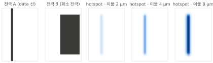
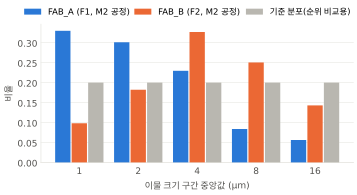
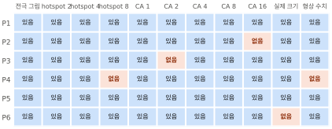
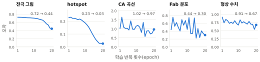
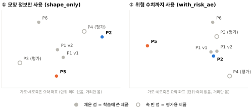
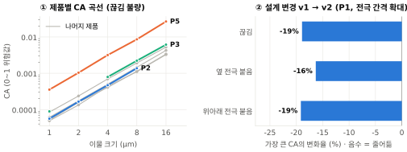
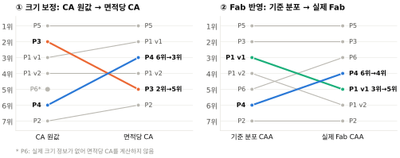
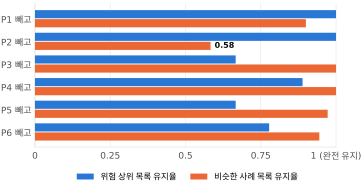
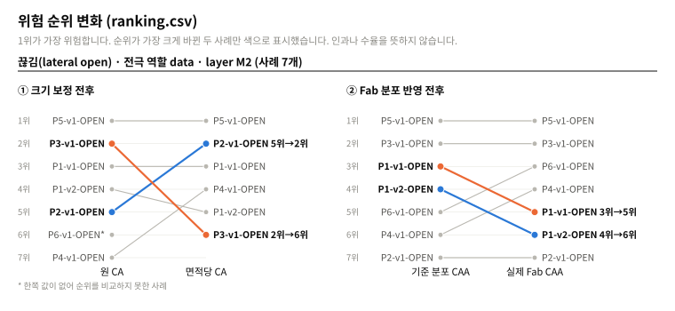
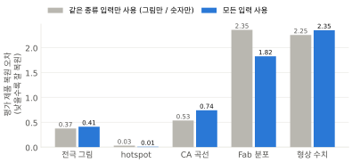

가짜(더미) 데이터를 만들고, 점검·학습·분석·평가를 실제로 돌린 뒤 나온 결과를 그림으로 읽는 과정을 순서대로 보여 줍니다. 이 문서의 모든 숫자와 그림은 아래 명령을 실제로 실행해서 얻은 값입니다.
디스플레이 공정에서는 아주 작은 먼지(이물)가 떨어져 전극이 끊어지거나 서로 붙는 불량이 생깁니다. 설계팀은 제품마다 “이물이 떨어지면 얼마나 위험한지”를 이미 시뮬레이션으로 계산해 둡니다. simcompare는 이렇게 이미 계산된 결과를 여러 제품끼리 나란히 놓고 비교하는 도구입니다.
| 용어 | 쉬운 설명 |
|---|---|
| 이물 | 공정 중에 떨어지는 작은 먼지 입자. 크기(µm)별로 다룹니다. |
| layout (전극 그림) | 전극이 어떻게 생겼는지 보여 주는 흑백 그림. |
| hotspot | 전극 그림 위에서 불량이 잘 나는 자리를 진하게 표시한 그림. 이물 크기마다 한 장씩. |
| CA | 이물이 떨어졌을 때 불량으로 이어지는 정도를 0~1 사이 값으로 나타낸 위험값. 클수록 이물에 약한 설계입니다. |
| 면적당 CA | CA를 화소(unit-pixel) 한 칸의 면적으로 나눈 값. 화소가 큰 제품은 CA도 커지기 쉬워서, 크기가 다른 제품끼리 공정하게 비교할 때 씁니다. |
| Fab 분포 | 실제 공장(Fab)에서 관측한 이물 크기별 비율. 공장마다 다릅니다. |
| CAA | CA에 Fab 분포를 곱해 더한 값. “이 공장 기준으로 얼마나 취약한가”를 보는 비교용 지표이며 수율이 아닙니다. |
| 사례 | 제품 × 설계 버전 × 불량 종류 한 묶음. 예) P1-v1-OPEN = 제품 P1, 버전 v1, 끊김 불량. |
| 요약 좌표 | 사례 하나를 숫자 몇 개로 줄인 것. 좌표가 가까우면 비슷한 사례로 봅니다. |
불량 종류는 세 가지입니다: 끊김(lateral_open, 전극 1개), 옆 전극 붙음(lateral_short, 같은 층 전극 2개), 위아래 전극 붙음(vertical_short, 다른 층 전극 2개).
여섯 단계를 순서대로 실행합니다. 각 단계는 앞 단계가 만든 파일을 읽어서 다음 파일을 만듭니다.
Python 3.11 이상과 uv가 필요합니다. GPU나 인터넷 연결 없이 일반 노트북 CPU로 충분합니다.
$ uv sync
$ uv run pytest # 모든 테스트가 통과하면 설치 완료
$ uv run simcompare all --config configs/demo.yaml --demo-out demo_data
결과는 outputs/demo/에 저장됩니다. 실행 중에
DEMO 모드: 합성/예시 설정이며 결과는 연구 근거가 아닙니다라는 문구가 보이면 정상입니다.
이 문서를 만들 때는 전체가 약 12초 걸렸습니다.
아래부터는 같은 과정을 한 단계씩 실행하며 무엇이 만들어지는지 봅니다.
| 단계 | 명령 | 걸린 시간 |
|---|---|---|
| 1 | simcompare demo-data | 0.1초 |
| 2 | simcompare validate-data | 2.7초 |
| 3 | simcompare train | 2.6초 |
| 4 | simcompare embed | 1.6초 |
| 5 | simcompare analyze | 2.1초 |
| 6 | simcompare evaluate | 2.9초 |
설정 파일 configs/demo.yaml의 주요 값: 이물 크기 1·2·4·8·16 µm, 학습 20회 반복, 평가용 비율 25%, seed 0.
seed가 같으면 몇 번을 돌려도 같은 결과가 나옵니다.
$ uv run simcompare demo-data --out demo_data --seed 0
실제 자료가 없어도 전체 흐름을 시험할 수 있도록 가짜 제품 6개(P1~P6)를 만듭니다. 제품마다 불량 3종류가 있고, P1은 설계를 한 번 바꾼 v2가 더 있어 사례는 모두 21개입니다.
demo_data/ ├── bundles.csv 사례 목록 (제품·버전·불량 종류·공장·크기 등) ├── layouts.csv 전극 그림 파일 위치 ├── hotspots.csv hotspot 그림 파일 위치 (이물 크기별) ├── ca_records.csv 이물 크기별 CA 값 ├── fab.json 공장별 이물 크기 분포 ├── geometry.json 두께·전극 간격·선폭 같은 형상 수치 ├── arrays/, images/ 실제 그림 파일 └── summary.json 생성 요약


$ uv run simcompare validate-data --config configs/demo.yaml
학습 전에 자료 상태를 확인합니다. 자료를 고치지는 않고 보고만 합니다. 화면에는 요약이, 파일
validation.json에는 자세한 내용이 남습니다.
{
"n_bundles": 21,
"n_warnings": 7,
"confounding": "ok"
}
실제 자료처럼 값이 빠지거나 조건이 다른 경우를 섞어 두었습니다. 이 단계가 이를 제대로 알려 주는지 확인합니다.

| 확인 항목 | 이번 결과 | 의미 |
|---|---|---|
| 실제 크기 없음 | P6-v1-LSHORT, P6-v1-OPEN, P6-v1-VSHORT | 이 사례는 면적당 CA 비교에서 빠집니다. |
| 빠진 CA 값 | 2 µm 3건, 16 µm 3건 | 빈 값을 0으로 채우지 않고 ‘없음’으로 둡니다. |
| hotspot ≈ 전극 그림 | 5건 (P2, P3, P4, P5, P6의 끊김) | hotspot이 전극 모양을 거의 그대로 따라가 같은 정보를 두 번 쓸 수 있다는 주의. |
| 공장 × 제품군 겹침 | ok | 제품군 F3가 두 공장에 모두 있어 공장 효과와 제품군 효과를 어느 정도 나눠 볼 수 있습니다. |
| 픽셀 위치 대응 확인 불가 | P6-v1-LSHORT, P6-v1-OPEN, P6-v1-VSHORT | 전극 그림과 hotspot의 픽셀 크기 정보가 없어 두 그림이 같은 위치를 가리키는지 확인할 수 없습니다. |
| CA 값 범위 | 최대 0.034 (0.03 초과 1건) | 일반 범위보다 큰 값이 있어 원자료 확인이 필요하다는 안내입니다(오류는 아님). |
| 학습/평가 나누기 | 가능 | 서로 독립인 제품 묶음이 6개 있습니다. |
$ uv run simcompare train --config configs/demo.yaml
전극 그림·hotspot·CA·Fab 분포·형상 수치를 한꺼번에 받아 짧은 숫자 묶음으로 압축했다가 다시 원래대로 복원하도록 모델(오토인코더)을 연습시킵니다. 복원을 잘하려면 사례의 핵심을 담아야 하므로, 압축된 숫자가 곧 그 사례의 요약이 됩니다.
같은 제품이나 같은 설계 계열(예: P1 v1과 v2)은 반드시 한쪽에만 들어갑니다. 연습문제와 시험문제가 겹치면 실력을
부풀려 보게 되기 때문입니다. 나눈 결과는 split.json에 있습니다.

함께 만들어지는 파일: model.pt(학습된 모델), train_history.csv(그림 4의 원자료),
split.json(나눈 결과), run_record.json(seed·설정·버전 기록).
$ uv run simcompare embed --config configs/demo.yaml
모든 사례를 숫자 좌표로 바꿉니다. 좌표를 만드는 방법이 다섯 가지이고, 각각을 ‘공간’이라고 부릅니다. 가장 중요한 구분은 위험 수치(CA·hotspot)를 썼느냐입니다.
| 공간 이름 | 무엇으로 만들었나 | 위험 수치 사용 | 크기 |
|---|---|---|---|
shape_only | 전극 모양·실제 크기·두께 같은 모양 정보만 (단순 통계 방법) | 아니오 | 8개 숫자 |
with_risk_baseline | 모양 + hotspot·CA·Fab 요약값 (단순 통계 방법) | 예 | 8개 숫자 |
with_risk_ae | 3단계에서 학습한 모델의 요약 | 예 | 32개 숫자 |
ae_struct | 모델 요약 중 설계·시뮬레이션 쪽 부분 | 예 | 16개 숫자 |
ae_fab | 모델 요약 중 공장 분포 쪽 부분 | 예 | 16개 숫자 |

reuses_risk_inputs=True로 표시됩니다.$ uv run simcompare analyze --config configs/demo.yaml
분석 단계는 네 가지 질문에 답하는 파일을 만듭니다. 이번 실행에서 검토 카드 3장, 비슷한 사례 315줄이 만들어졌습니다.
| 질문 | 보는 파일 |
|---|---|
| 제품별로 위험이 얼마나 다른가? | risk_table.csv |
| 크기·공장을 반영하면 순위가 바뀌나? | ranking.csv, rank_agreement.json |
| 이 사례와 비슷한 다른 제품 사례는? | neighbors.csv, clusters.json |
| 결과가 제품 하나에 좌우되지 않나? | loo_stability.csv |
| 유사 제품 비교군 안에서 어느 전극·layer가 위험하고 무엇이 다른가? | neighborhood_comparison.csv, neighborhood_geometry.csv |
| 회피안 후보와 변경본 재비교는? | edit_candidates.json, variant_comparison.csv |
| 한 장으로 정리하면? | review_cards.json |
| 그림으로 한눈에 보려면? | figures/ca_curves.svg, figures/loo_stability.svg, figures/rank_shift.svg |


rank_agreement.json에 0~1 사이 값(1이면 완전히 같음)으로 나옵니다:
끊김 기준 공장 반영 전후 0.71, 크기 보정 전후 0.60.neighbors.csv에는 사례마다 공간별로 가장 가까운 다른 제품 사례 3개가 있습니다. 같은 불량 종류·같은 전극 역할끼리만 비교합니다.
아래는 가장 위험한 P5 끊김 사례의 결과입니다.
| 공간 | 가까운 순서 | 위험 수치 사용 |
|---|---|---|
shape_only모양만 | P1 v1 → P1 v2 → P6 | 아니오 |
with_risk_baseline모양+위험 (통계) | P1 v1 → P2 → P1 v2 | 예 (독립 발견 아님) |
with_risk_ae모양+위험 (모델) | P1 v1 → P6 → P2 | 예 (독립 발견 아님) |
ae_struct모델 · 설계 쪽 | P3 → P1 v1 → P6 | 예 (독립 발견 아님) |
ae_fab모델 · 공장 쪽 | P6 → P1 v1 → P1 v2 | 예 (독립 발견 아님) |
공간마다 답이 조금씩 다릅니다. 모양만 쓴 공간(P1 v1 → P1 v2 → P6)이 “위험과 상관없이 모양이 비슷한 사례”라는 독립적인 근거이고, 나머지는 참고용입니다.

불량 종류·전극 역할·layer 조합마다 한 장씩, 앞의 결과를 모아 정리합니다. 아래는 끊김 불량 카드를 그대로 옮긴 것입니다.
| 형상 | 위험 높은 사례(중앙값) | 위험 낮은 사례(중앙값) | 검토해 볼 방향 |
|---|---|---|---|
| 전극 경계 밀도 | 0.0227 | 0.0237 | 늘리는 쪽 |
| 전극 간격 | 9 | 6 | 줄이는 쪽 |
analyze를 실행하면 위에서 본 표 가운데 세 가지가 그림으로도 저장됩니다. 파일은
outputs/demo/figures/에 있고, 브라우저로 열면 한글 설명까지 그대로 보입니다.
추가 설치는 필요 없습니다.
| 파일 | 보여 주는 것 | 이 문서의 비슷한 그림 |
|---|---|---|
rank_shift.svg | 크기 보정·Fab 반영 전후 순위 변화. 가장 크게 바뀐 두 사례만 색으로 표시 | 그림 7 |
ca_curves.svg | 이물 크기별 CA 곡선. CA가 가장 큰 사례를 주황으로 표시하고 빠진 값은 선을 끊음 | 그림 6 ① |
loo_stability.svg | 제품을 하나씩 뺐을 때 두 목록의 유지율 막대 | 그림 8 |
이 문서의 그림은 설명을 위해 일부 사례만 골라 그렸지만, 자동 그림은 모든 비교 그룹(불량 종류·전극 역할·layer 조합)을
한 줄씩 세로로 쌓아 보여 줍니다. 아래는 이번 실행에서 실제로 저장된 rank_shift.svg의 첫 번째 그룹입니다.

질의 사례와 오토인코더 공간에서 가까운 다른 제품 사례를 묶어 비교군을 만들고, 그 안에서만 면적당 CA를 비교합니다.
사례마다 관측한 이물 크기가 다를 수 있어 비교군이 모두 관측한 크기만 씁니다. 아래는 P5 옆 전극 붙음 사례입니다
(neighborhood_comparison.csv).
| 비교군 | 거리 |
|---|---|
| P5 (질의) | - |
| P3 | 1번째로 가까움 |
| P1 v1 | 2번째로 가까움 |
| P2 | 3번째로 가까움 |
비교 크기 1, 4, 8 µm에서 P5는 비교군 1위이고,
이웃 중앙값의 3.4배입니다. 비교군에서 가장 위험이 낮은 P3를
참고 사례로 삼아 전극 쌍 치수를 비교합니다(neighborhood_geometry.csv, 단위 µm).
| 치수 | P5 | P3 | 차이 | 참고 사례 쪽 방향 |
|---|---|---|---|---|
| 최소 간격 | 5 | 10 | +5 | 늘리기 |
| 좁은 간격 길이 | 80 | 97.5 | +17.5 | 늘리기 |
| 전극 a 최소 선폭 | 2.5 | 5 | +2.5 | 늘리기 |
이 차이로 국소 편집 후보를 만듭니다(edit_candidates.json). 전극 전체를 바꾸지 않고 hotspot 부근 영역(ROI, µm)
안에서만 후퇴·제거하며, 양은 간격 차이의 0.5배와 1배, 대상은 두 전극 각각입니다.
| 후보 | 편집 | 대상 전극 | 양 | ROI (x0, y0, x1, y1) | ROI 근거 |
|---|---|---|---|---|---|
P5-v1-LSHORT-e1 | 국소 후퇴 | pixel_electrode (ITO) | 2.5 µm | 12, 4.5, 33, 95.5 | hotspot@8 |
P5-v1-LSHORT-e2 | 국소 후퇴 | pixel_electrode (ITO) | 5 µm | 12, 4.5, 33, 95.5 | hotspot@8 |
P5-v1-LSHORT-e3 | 국소 후퇴 | data (M2) | 2.5 µm | 12, 4.5, 33, 95.5 | hotspot@8 |
P5-v1-LSHORT-e4 | 국소 후퇴 | data (M2) | 5 µm | 12, 4.5, 33, 95.5 | hotspot@8 |
edit_candidates.csv에 남습니다. 후보는 관찰된 차이에 근거한 검토 대상일 뿐이며 채택은 설계자가 판단합니다.후보 JSON은 particle-sim make-variant가 그대로 읽어 편집한 마스크로 변경본 입력을 만듭니다. 변경본을
simulate-nominal → export-simcompare로 계산해 merge-exports로 원안과 합치면,
variant_comparison.csv가 불량 종류별로 원안 대비 변화를 보여 줍니다. 다른 불량이 늘었는지도 이 표에서 봅니다.
아래는 더미 데이터에 들어 있는 변경본 P1 v2(전극 간격 확대)의 결과입니다.
| 불량 | 원안 P1 v1 | 변경본 P1 v2 | 변화 | 비교 크기 |
|---|---|---|---|---|
| 끊김 | 9.73e-07 | 7.89e-07 | -19% | 1, 2, 4, 8, 16 µm |
| 옆 전극 붙음 | 9.37e-07 | 7.84e-07 | -16% | 1, 2, 4, 8, 16 µm |
| 위아래 전극 붙음 | 1.22e-06 | 9.86e-07 | -19% | 1, 2, 4, 8, 16 µm |
$ uv run simcompare evaluate --config configs/demo.yaml
학습에 쓰지 않은 평가용 제품(P3, P4)으로 결과를 점검합니다. 결과는 evaluation.json에 있고,
학습·평가가 섞이지 않았는지 검사(leakage_check)는 passed였습니다.
같은 조건으로 ‘그림만’, ‘숫자만’, ‘모두’ 넣은 모델을 각각 학습해 평가용 제품을 얼마나 잘 복원하는지 비교합니다.

평가용 사례마다 학습용 제품 중 모양이 가장 비슷한 사례를 찾습니다. 그다음 평가 사례의 면적당 CA와 이웃들의 평균이 둘 다 학습 사례의 중간값보다 높거나, 둘 다 낮으면 ‘같음’으로 셉니다. 정답표가 없으므로 정확도가 아니라 “모양이 비슷하면 위험 경향도 비슷한가”를 보는 참고 근거입니다.
| 평가 사례 | 모양이 비슷한 학습 사례 | 위험 경향 |
|---|---|---|
P3-v1-OPEN | P1 v2 · P1 v1 · P6 | 다름 |
P3-v1-LSHORT | P1 v2 · P1 v1 · P6 | 다름 |
P3-v1-VSHORT | P1 v2 · P1 v1 · P6 | 다름 |
P4-v1-OPEN | P2 · P1 v1 · P1 v2 | 같음 |
P4-v1-LSHORT | P2 · P1 v1 · P1 v2 | 같음 |
P4-v1-VSHORT | P2 · P1 v1 · P1 v2 | 다름 |
경향이 같았던 비율: 0.33 (6건 중). 평가 제품이 2개뿐이라 이 값 하나로 판단하지 않습니다.
| 빼 본 기준 | 판정 | 설명 |
|---|---|---|
| 공장(Fab) | 주의해서 평가 가능 (ok) | 공장 하나를 통째로 빼고 나머지로 설명이 되는지 봅니다. |
| 제품군 | 주의해서 평가 가능 (ok) | 제품군 하나를 통째로 빼고 봅니다. |
판정은 세 가지 중 하나입니다. 주의해서 평가 가능: 비교할 수 있음. 평가 불가: 뺄 그룹이 부족함. 효과 분리 불가: 공장과 제품군이 늘 같이 움직여 둘 중 무엇의 영향인지 구분할 수 없음.
결과 파일이 25개나 되지만, 아래 순서로 보면 충분합니다.
validation.json의 경고 — 빠진 자료, 실제 크기 없는 제품, 공장·제품군 겹침부터 확인합니다. (그림 3)split.json — 어떤 제품이 평가용으로 갔는지 확인합니다. (5장)review_cards.json — 불량 종류별 카드에서 대표·반대 사례, 검토 후보, ‘자료 없음’, ‘전문가 확인 필요’를 읽습니다. (7-4)ranking.csv — 크기·공장 반영 전후로 순위가 크게 바뀐 제품을 찾습니다. figures/rank_shift.svg로 먼저 훑어보면 빠릅니다. (그림 7·10)neighbors.csv — 모양만 쓴 공간(reuses_risk_inputs=False)의 이웃을 우선 봅니다. (7-3)loo_stability.csv, evaluation.json — 결론이 제품 하나에 좌우되지 않는지 확인합니다. (그림 8·9)clusters.json의 0번·1번은 이름표일 뿐, 0번이 더 안전하다는 뜻이 아닙니다.demo_data/와 같은 모양으로 bundles.csv, fab.json 등을 준비합니다.
자세한 열 이름은 docs/data_contract.md에 있습니다.configs/real.example.yaml을 configs/real.yaml로 복사하고 자료 위치와 이물 크기 목록을 바꿉니다.uv run simcompare validate-data --config configs/real.yaml 후 경고를 읽습니다.mode: real)에서는 확정되지 않은 계산을 하지 않습니다. 예를 들어 CAA 규칙이 정해지기 전에는 CAA 칸이 비어 있고, 위아래 전극 붙음 사례에 적용 공정 layer가 없으면 오류로 멈춥니다. 확정이 필요한 항목은 docs/open_questions.md에 있습니다.| 화면에 나온 문구 | 해결 |
|---|---|
…model.pt이(가) 없습니다. 먼저 'simcompare train'을 실행하세요 | train을 먼저 실행합니다. |
체크포인트의 샘플이 현재 데이터에 없습니다(재학습 필요) | 자료가 바뀌었으니 train부터 다시 실행합니다. |
알 수 없는 설정 키 … | 설정 파일 오타입니다. configs/real.example.yaml과 비교합니다. |
독립 그룹(제품·설계 계열)이 2개 미만입니다 | 비교할 제품이 너무 적습니다. 제품을 늘립니다. |
더 자세한 설명: docs/usage.md(실행 가이드), docs/model_design.md(모델 구조와 한계).
이 문서는 uv run --with matplotlib python docs/walkthrough/build.py로 다시 만들 수 있습니다.